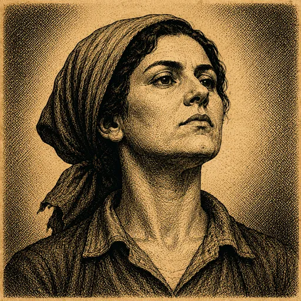

$
Arte de asesores
Estilo "soft-3D" luminoso · Episodio Bolivia 1985 · cuadrados para el marco-moneda
EL ELENCO · EN MARCO-MONEDA

Don Marcos
Banco Central
#C9A24B
Frío, calculador. Quiere imprimir.

Compañera Gladys
Líder del Sindicato (COB)
#D9503C
Combativa, digna. No perdona promesas rotas.

Señor Fondo
Representante del FMI
#4E82AE
Pulcro, distante. Sonrisa sin humor.

El Comerciante
Cámara de Comercio
#3E9B63
Cansado, pragmático. Solo quiere vender pan.

El Presidente
Antagonista
#8A5BC4
Populista nervioso. Grandeza y paranoia.
A TAMAÑO DE UI · se lee a cualquier escala
{{ s.label }}
Composición segura para círculo
Cabeza y hombros centrados, mirada al frente, rasgos dentro del 70% central. El fondo llena el cuadro con el tinte del acento del personaje, así el recorte circular del marco-moneda nunca deja esquinas vacías.
ANTES → DESPUÉS

ANTES
Grabado sepia
Editorial, oscuro, alto contraste. Choca con la UI clara.
→
DESPUÉS
Soft-3D cálido
Luminoso, redondeado, creíble. Mantiene la personalidad del personaje.